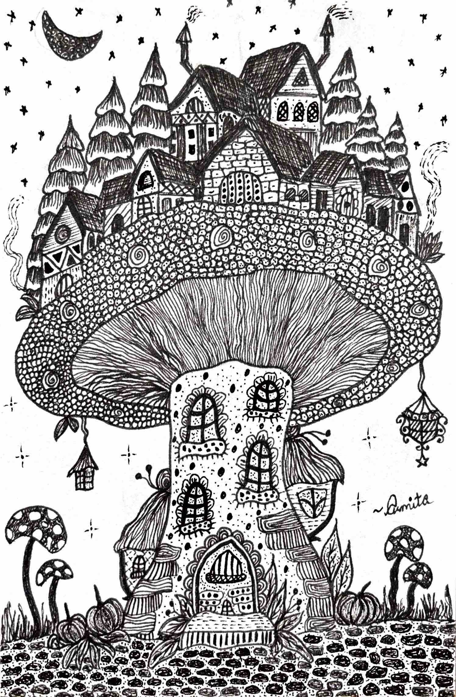

ML for real-world data
Applied machine learning on data that's large, messy, and high-stakes — making it work reliably in practice.
I build machine-learning systems that hold up on real, messy, high-stakes data.

I'm a Master's student in Computer Science (Intelligent Systems) at RPTU Kaiserslautern-Landau, finishing my thesis in 2026. My work lives where machine learning meets the real world — data that's large, messy, and consequential.
One question keeps pulling me forward: how do we know a model is right? Turning thousands of biomedical documents into structured knowledge, detecting anomalies in industrial sensor streams, measuring how reliably research is reported — I keep landing in the same place, that data and the way we represent it decide whether a system can be trusted.
Off-screen, I illustrate, bake, and travel whenever I can.

RPTU Kaiserslautern-Landau, Germany
RCC Institute of Information Technology, Kolkata, India
Visual Information Analysis Group, RPTU — Master's thesis on anomaly detection
German Research Center for Artificial Intelligence (DFKI)
Dept. of Electrical & Information Technology, RPTU
PricewaterhouseCoopers (PwC), Kolkata, India
Applied machine learning on data that's large, messy, and high-stakes — making it work reliably in practice.
Turning unstructured text into structured knowledge, and how data shapes what models extract.
Semi-supervised detection in multivariate time-series under limited supervision.
Pulling reliable, structured information out of text, and studying the scientific literature itself.
My ongoing Master's thesis: detecting anomalies in multivariate sensor data from an industrial distillation process, using a forecasting-based pipeline with residual scoring and adaptive thresholding under limited supervision.
An end-to-end LLM pipeline transforming 13,000+ drug leaflets into a structured knowledge graph, with a human-in-the-loop and LLM-as-a-judge evaluation framework. Built to be reliable in a high-stakes domain.
A large-scale metascience pipeline combining rule-based NLP, zero-shot LLMs, and hybrid verification to measure reproducibility reporting across 3,000+ papers from NeurIPS, ACL, and AAAI — reaching 92% accuracy and 0.84 Cohen's κ.
An interactive dashboard exploring a century of film data (1920–2020): revenue trends, genre distributions, collaboration networks, and a rule-based recommender — built with bubble charts, heatmaps, and network graphs.
MEDAKA: Construction of Biomedical Knowledge Graphs Using Large Language Models
Sengupta, A., Selby, D. A., Vollmer, S. J., Großmann, G.
2025 · under review @ ACM CIKM 2026
arXiv:2509.26128 ↗Automated Verification of Reproducibility Reporting in AI Research
Sengupta, A., Selby, D. A., Vollmer, S. J.
2026 · under review @ IJCAI-ECAI 2026 CLEAR-AI workshop